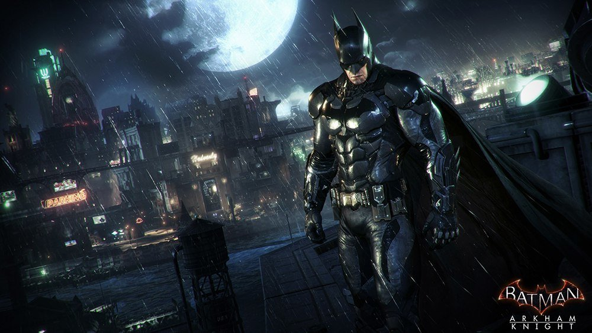
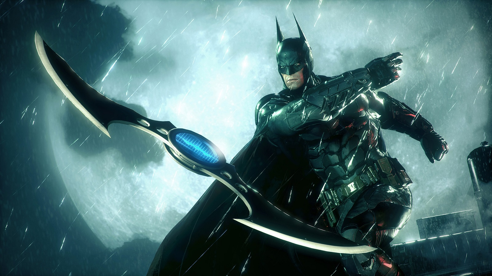

Бэтмен
Бэ́тмен (англ. Batman), изначально Бэт-мен (англ. Bat-man «Человек — летучая мышь») — супергерой, персонаж комиксов
издательства DC Comics, впервые появившийся в Detective Comics («Детективные комиксы») № 27 30 марта 1939 года,
Бэтмен является одним из самых популярных и известных героев комиксов. Был создан художником Бобом Кейном в
соавторстве с писателем Биллом Фингером. До недавнего времени Боб Кейн считался главным создателем персонажа, но в
2015 году, после множества исследований, авторство было передано Биллу Фингеру, так как настоящий вклад Кейна в
создание героя оказался весьма незначительным
В конце 1990-х работу над серией начал Джеф Лоэб, ранее работавший в качестве сценариста на телевидении. Вместе с
Тимом Сэйлом он написал две мини-серии — The Long Halloween (рус. Длинный Хэллоуин) и Dark Victory (рус. Тёмная
победа), события которых стали провалом в ранней карьере Бэтмена, противостоящего суперзлодеям, история которых тоже
была переписана (в первую очередь Харви Дента), а некоторые были убраны из сюжета, например, Праздник, что вызвало
недовольство поклонников. В 2003 году Лоэб вместе с художником Джимом Ли начал работу над одной сюжетной аркой —
Batman: Hush (рус. Бэтмен: Молчание) в рамках основной серии о Бэтмене. Арка из двенадцати выпусков представила
Бэтмена и Женщину-кошку в борьбе против рассадника злодеев Готэма, а также «воскресила» Джейсона Тодда, который
отправился на поиски таинственного злодея по имени Хаш. Примечательно, что среди читателей комиксов Джейсон Тодд
считался одним из персонажей, на воскрешение которых и очередное появление в комиксах не было надежды, несмотря на
то, что почти все убитые персонажи рано или поздно возвращаются. Среди поклонников комиксов существовал афоризм,
который назывался «Условие Баки» (по имени Баки Барнса, персонажа Marvel Comics, напарника Капитана Америки): «Никто
не останется мёртвым, кроме Баки, Джейсона Тодда и дяди Бена»[48]. Возвращение Тодда было положительно воспринято
читателями, а сам сюжет стал первой работой Джима Ли в рамках постоянной серии комиксов. Сюжет стал успешным и в
финансовом плане, заняв первое место в списке продаж Diamond Comic Distributors (англ.)русск., где истории о Бэтмене
отсутствовали с 1993 года, когда вышел выпуск Batman № 500. Возвращение Тодда заложило основы для сюжетной линии
писателя Джадда Винника Under the Hood (рус. Под колпаком), где Тодд стал злодеем по имени Красный колпак.
Два заметных автора историй о Бэтмене за последние годы: Фрэнк Миллер (вверху) и Грант Моррисон (внизу)
В 2005 году была запущена серия All-Star Batman and Robin (рус. Сверхновый Бэтмен и Робин), которая не входила в
основной канон вселенной DC, а события в ней разворачиваются в одном из миров Мультивселенной. Серия, написанная
Фрэнком Миллером и иллюстрированная Джимом Ли, была положительно воспринята критиками и читателями[49][50] и стала
успешна в финансовом плане[51][52].
Начиная с 2006 года постоянными сценаристами двух текущих серий о Бэтмене — Batman и Detective Comics — стали Грант
Моррисон и Пол Дини соответственно. Вместе с Дини Моррисон вернул в сюжет тенденции 1950-х годов — научную
фантастику, а многие из прошлых сюжетов были пересмотрены и представлены как наркотические галлюцинации Бэтмена.
Кульминацией работы Моррисона стала сюжетная линия Batman R.I.P. (рус. Покойся с миром, Бэтмен), где персонаж
противостоял неизвестной ранее организации «Чёрная перчатка», целью которой стало свести Бэтмена с ума. Сюжетная
линия стала подводящей к масштабному кроссоверу Моррисона — Final Crisis (рус. Финальный кризис), в котором была
показана мнимая смерть Бэтмена от руки Дарксайда. В 2009 году вышла серия Batman: Battle for the Cowl (рус. Бэтмен:
Битва за капюшон, «капюшон» — ссылка на маску Бэтмена), где герои, убеждённые в смерти Бэтмена, решают, кто займёт
его место. Новым Бэтменом становится протеже Уэйна — Дик Грейсон, а сын Уэйна Дэмиен становится новым
Робином[53][54]. В июне 2009 года Винник вернулся к работе над Бэтменом, в то время как Грант Моррисон занялся
отдельной серией Batman and Robin (рус. Бэтмен и Робин)[55].
На 2011 год Бэтмен регулярно появляется в нескольких постоянных сериях (основного канона и альтернативных
вселенных): Detective Comics и Batman, стартовавших в 1939 и 1940 году соответственно; переписанном третьем томе
Catwoman (рус. Женщина-кошка), стартовавшем в 2010 году после Темнейшей ночи; втором томе серии Batman and the
Outsiders (рус. Бэтмен и Аутсайдеры), который был запущен в июле 2011 и рассказывает о работе Бэтмена совместно с
командой Аутсайдеров; продолжающихся с августа 2009 года сериях Batman and Robin (рус. Бэтмен и Робин), Gotham City
Sirens (рус. Сирены Готэма), Red Robin (рус. Красный Робин)[56]; Birds of Prey (рус. Хищные птицы), стартовавшей в
2010 году, в которой Бэтмен показан в составе одноимённой команды[57]; и пяти сериях, стартовавших в 2011 году:
Batman: The Dark Knight (рус. Бэтмен: Тёмный рыцарь) (том 2)[58], Batman Incorporated (рус. Объединение
Бэтмена)[59], Batwoman (рус. Бэтвумен)[60], The All New Batman: The Brave and the Bold (рус. Полностью новый Бэтмен:
Отважный и смелый), основанной на мультсериале «Бэтмен: Отважный и смелый»[61], а также четвёртый том Batman Beyond
(рус. Бэтмен будущего)[62]. В рамках «перезапуска» DC Comics после окончания кроссовера Flashpoint (рус. Флэшпоинт),
получившего название The New 52, 52 серии были обнулены и начаты заново с новыми авторами, а остальные перестали
публиковаться. Создатели сообщили, что структура повествования Бэтмена претерпит незначительное изменения и будет во
многом походить на оригинальную[63]. Связанные с Бэтменом серии, которые начались заново с сентября 2011 года:
Batman #1, под авторством Скотта Снайдера и иллюстрациями Грега Капулло;
Detective Comics #1, автора и художника Тони Даниэла;
Batwing #1, писателя Джадда Винника и художника Бена Оливера;
Batman: The Dark Knight #1, автора и художника Дэвида Финча;
Batman and Robin #1, автора Питера Томаси и художника Пэта Глисона;
Batgirl #1, автора Гейла Саймона и художника Адриана Сифа;
Batwoman #1, автора Джеймса Х. Уильяма III и Хэйдена Блэкмена, и художника Эми Ридер:
Nightwing #1, автора Кайла Хиггинса и художника Эдди Барроуза;
Catwoman #1, автора Джадда Виника и художника Гиллема Марча;
Birds of Prey #1, автора Дуэйна Свержински и художника Джизеса Сэйза;
Red Hood and the Outlaws #1, автора Скотта Лобделла и художника Кеннета Рокафо[64] рта.
Грант Моррисон займёт место сценариста второго тома Batman Incorporated, который начнётся с 2012 года после
окончания сюжетной линии Leviathan (рус. Левиафан)[65].
Биография
Биография Бэтмена за 70 лет претерпела множество изменений, значительных и незначительных, что связано с политикой
DC. С течением времени персонажи неизбежно стареют, и, чтобы избежать этого или возможных нестыковок с
альтернативными сюжетами, издательство может «перезапустить» историю, что и случилось в 1986 году после кроссовера
Кризис на Бесконечных Землях. Историк Роберт Пиросон в начале 1990-х годов отметил, что в отличие от многих
персонажей у Бэтмена нет своеобразной «предыстории», которая бы имела место в определённый период и которую можно
было бы брать за основу; особенности его биографии менялись с течением более чем пяти десятилетий, обрастая новыми
подробностями[66].
Обычно центральным событием в жизни Бэтмена, «отправной точкой» практически любого варианта его биографии принято
считать смерть родителей, когда он был ребёнком. Брюс Уэйн был морально травмирован, став свидетелем убийства его
отца, врача Томаса Уэйна и матери Марты Уэйн, которых выстрелом из пистолета убивает грабитель Джо Чилл. Юный Брюс
решает искоренить преступность в Готэме, позже став мстителем в маске по прозвищу Бэтмен. Историки комиксов также
признают значительным появление Робина, однако с приходом Денниса О’Нила на пост сценариста, а позже — редактора
серии, Робин отодвинут на задний план, в надежде установить преемственность между сериями[67].
Золотой век
См. также: Золотой век комиксов
С первого своего появления в Detective Comics № 27 в 1939 году Бэтмен сразу был представлен как борец с
преступностью[68]. История детства Брюса Уэйна была показана в выпуске №33, а позже конкретизирована в № 46.
Согласно этим выпускам, Брюс родился 19 февраля[69] в семье Томаса и Марты Уэйн — богатых промышленников Готэма,
занимавшихся благотворительностью и благоустройством города, однако Томас Уэйн работал врачом в госпитале вместо
того, чтобы заниматься корпорацией. Брюс вырос в фамильном особняке Уэйнов — Пэлисайдс — в пригороде Готэма и рос
привилегированным ребёнком до восьми лет, пока его родители не погибли на глазах у маленького Брюса от руки мелкого
бандита Джо Чилла на пути из кинотеатра. На похоронах родителей Брюс поклялся отомстить за смерть родителей и
заняться искоренением преступности в Готэме. Он проходит интенсивную физическую подготовку, обучается боевым
искусствам, навыкам детектива, однако понимает, что одной физической формы недостаточно. Уэйн считал, что
«преступники довольно суеверны и трусливы», а потому его внешний вид должен внушать им страх. Он искал подходящий
образ, в это время в окно влетела летучая мышь, и Брюс решил принять за основу её образ и взять псевдоним
«Бэтмен»[70].
В начале своей карьеры Бэтмен был отрицательно воспринят полицией, которые считали «мстителя в маске» не более, чем
психопатом. В тот период у Брюса была невеста, Джули Мэдисон, а чуть позже Уэйн берёт к себе сироту Дика Грейсона —
циркового акробата, который стал его напарником Робином. Бэтмен становится одним из основателей Общества
Справедливости Америки[71] и вместе с Суперменом — почётным его членом[72]. Полиция города начинает относиться к
нему более благосклонно, и скоро он получает звание почётного детектива полиции Готэма[73]. Некоторое время спустя в
город прибывает Альфред Пенниуорт — дворецкий четы Уэйнов — и после того, как он узнаёт тайну личности Бэтмена,
становится его союзником и помощником.
Серебряный и Бронзовый века
См. также: Серебряный век комиксов и Бронзовый век комиксов
Началом Серебряного века DC считается 1956 год и появление нового Флэша — Барри Аллена. Стиль историй о Бэтмене
сменился менее мрачным в период между Золотым и Серебряным веками, и к началу 1960-х годов они включали в себя
научно-фантастические элементы — космических пришельцев, научные опыты, однако к выпуску Detective Comics № 327,
вышедшему в мае 1964 года, Бэтмен снова вернулся к своим корням детектива.
После введения Мультивселенной в начале 1960-х годов выясняется, что все персонажи Золотого века жили на Земле-2, а
Серебряного — на Земле-1, и та история происхождения, что была описана ранее, относилась к той версии Бэтмена,
которая теперь стала считаться альтернативной. Сам персонаж обозначался как Бэтмен с Земли-2, и позже в выпуске
Superman Family № 211 было показано, что он женился на Женщине-кошке Земли-2 — Селине Кайл — и стал отцом Хелены
Уэйн, позже известной как Охотница. Впоследствии Охотница вместе с Диком Грейсоном — Робином Земли-2 — встаёт на
защиту Готэма. Эта история Бэтмена считается альтернативной и не вхожей в основной канон, однако комиксы о Бэтмене
были опубликованы без перерыва, в отличие от аналогичных персонажей DC: Зелёного Фонаря Алана Скотта и Хэла Джордана
и Флэша Джея Гаррика и Барри Аллена. В течение последующих десятилетий подробности происхождения основного Бэтмена
Земли-1 были изменены или расширены, как пример — встреча с будущим Суперменом в юности и воспитание дядей Филипом
Уэйном, который появился в выпуске Batman № 208 в феврале 1969 года[74][75]. В 1980 году тогдашний редактор серии
Пол Левитц стал автором серии Untold Legend of the Batman (рус. Нерассказанная история Бэтмена), в которой тщательно
и в хронологическом порядке описал биографию Брюса Уэйна.
В течение всего периода Бэтмен работает вместе с другими героями, в первую очередь с Суперменом, с которым впервые
объединился в 1954 году в рамках серии World’s Finest Comics и появлялся вплоть до её окончания в 1986 году. Бэтмен
и Супермен, как правило, изображаются как близкие друзья, которые в курсе настоящих личностей друг друга. Вместе они
становятся основателями Лиги Справедливости Америки в выпуске Brave and the Bold № 28. В 1970-х Brave and the Bold
сменила название на Batman, а сам герой ежемесячно появлялся в команде с несколькими персонажами.
В 1969 году Дик Грейсон начинает посещать колледж, что стало толчком к пересмотру некоторых моментов историй о
Бэтмене. Сам Брюс Уэйн переезжает из своего особняка в пентхаус на вершине небоскрёба Wayne Enterprises в центре
Готэма для того, чтобы быть ближе к местам преступления и реагировать более оперативно. В период с середины 1970-х
по начало 1980-х годов Бэтмен практически всегда работает в одиночку, иногда объединяясь с Робином или Бэтгёрл.
Истории снова вернулись к своему традиционному мрачному наполнению и оформлению, а изображённые преступления были
всё более тяжкими. В тот период появилось несколько новых персонажей, и вернулись старые, такие как Джокер —
убийца-психопат — и Ра’с аль Гул — террорист в возрасте нескольких сотен лет, который знает о том, что Брюс Уэйн и
Бэтмен — одно и то же лицо. В начале 1980-х годов Дик Грейсон уходит с поста Робина и становится отдельным
супергероем под псевдонимом Найтвинг[3].
В финальном выпуске Brave and the Bold № 200 в июле 1983 года Бэтмен покидает Лигу Справедливости и формирует новую
команду под названием Аутсайдеры. Он остаётся лидером команды вплоть до выпуска Batman and the Outsiders № 32 в 1986
году, когда серия была отменена.
Современный век
См. также: Современный век комиксов и Crisis on Infinite Earths
Бэтмен вместе с Тимом Дрейком — третьим Робином, сменившим погибшего Джейсона Тодда, художник: Джим Ли
После ограниченной серии комиксов Crisis on Infinite Earths (рус. Кризис на Бесконечных Землях) серии издательства
были перезапущены в попытке обновить персонажей для более современного периода и нового поколения читателей. Фрэнк
Миллер переписал происхождение Бэтмена в 1986 году, в выпусках Batman № 404—407, сделав акцент на твёрдость
характера и непоколебимость воли героя[76]. Бэтмен Земли-2 был окончательно удалён из сюжета, равно как и некоторые
моменты биографии Бэтмена времён Серебряного века/Земли-1, которая теперь именовалась посткризисной, а после отмены
Мультивселенной Земля-1 перестала существовать. Пример внёсенных изменений — смена честной и эффективной полиции
Готэма на коррумпированную и контролируемую преступными группировками города, которые стремились вывести Бэтмена из
игры вместо того, чтобы помогать ему, и в результате чего Бэтмен был объявлен вне закона. Несмотря на то, что
прошлое Дика Грейсона не изменилось, появился второй Робин Джейсон Тодд — сирота и сын преступника[77]. Удалена
история об опекуне юного Брюса Уэйна — Филлипе Уэйне, который был заменён Альфредом Пенниуортом, заботившемся о
Брюсе после смерти родителей. Бэтмен уже не является основателем Лиги Справедливости Америки, однако некоторое время
был её лидером, когда команда была переформирована в 1987 году. Чтобы заполнить пробелы, образовавшиеся в новой
истории Бэтмена после кризиса, DC в 1989 году запустили серию Legends of the Dark Knight (рус. Легенды Тёмного
рыцаря), а также опубликовали ряд мини-серий и отдельных выпусков, которые были сюжетно связаны с сюжетом Миллера
1986 года.
В 1988 году, в выпусках Batman № 426—429, второй Робин Джейсон Тодд погибает от руки Джокера, что делает Бэтмена
более жестоким по отношению к преступникам и в то же время менее осторожным. После смерти Тодда Бэтмен несколько лет
работает в одиночку и в начале 1990-х годов находит себе нового напарника — Тима Дрейка, который надевает маску
Робина[78]. В 2005 году создатели «воскресили» Джейсона Тодда, который оказался по разные стороны баррикад со своим
бывшим наставником.
Многие из основных серий о Бэтмене в 1990-х годах были включены в состав кроссовер-серий. В 1993 году DC издали
Death of Superman (рус. Смерть Супермена), а также Knightfall (рус. Падение рыцаря). В сюжете Knightfall злодей Бэйн
наносит Брюсу Уэйну травму позвоночника, и он на некоторое время оставляет роль Бэтмена, передав плащ Азраилу. После
окончания Knightfall последующая сюжетная линия раскололась на два направления — приключения Азраила в качестве
нового Бэтмена и события, случившиеся с Брюсом Уэйном, и поиски способа снова вернуться к роли Тёмного рыцаря. Обе
сюжетные линии объединяются в истории Knight’s End (рус. Конец рыцаря), где Азраил, ставший более жестоким, терпит
поражение от исцелившегося Брюса Уэйна. Уэйн передаёт мантию Бэтмена Дику Грейсону, который в то время уже известен
под псевдонимом Найтвинг, временно предлагая ему принять личность Бэтмена, пока Уэйн не будет готов вернуться[79].
В 1994 году в сюжетной линии Zero Hour: Crisis in Time (рус. Нулевой час: Кризис времени) DC снова изменили
пространственно-временной континуум вымышленной вселенной, что затронуло и судьбу персонажей, в том числе Бэтмена.
Одним из нововведений стало восприятие Бэтмена как всего лишь городской легенды в качестве наиболее
распространённого мнения среди жителей Готэма. Встреча Бэтмена с убийцей его родителей Джо Чиллом была убрана из
хронологии, а сюжетная линии Year Two (рус. Второй год), изданная ранее, была признана неканонической.
Бэтмен вернулся в Лигу Справедливости в 1996 году, когда Грант Моррисон стал автором новой серии JLA. Хотя Бэтмен в
значительной степени способствовал успехам команды, Лига Справедливости вскоре отошла на второй план в основных
сериях о Бэтмене. В 1998 году Готэм был разрушен землетрясением и в конечном итоге отрезан от остальной части
страны. Лишившись многих технологических ресурсов, Бэтмен противостоит бандам, захватившим город в сюжетной линии
1999 года Batman: No Man’s Land (рус. Бэтмен: Ничейная территория).
В конце 1990-х годов отношения Бэтмена с департаментом полиции Готэма изменились в худшую сторону во время сюжетов
Batman: Officer Down (рус. Бэтмен: Падение офицера) и Batman: War Games/War Crimes (рус. Бэтмен: Военные
игры/военные преступления). Союзник Бэтмена в полиции комиссар Джеймс Гордон уволен из департамента, а сам Бэтмен
объявлен в розыск после того, как один из его планов приводит к войне криминальных группировок в городе, в
результате которой власть в городе захватывает Чёрная маска. Ещё одна проблема Бэтмена — Лекс Лютор, суперзлодей,
который, став президентом Соединённых Штатов, отменил все правительственные контракты Wayne Enterprises. Лютор
организовывает покушение на возлюбленную Уэйна — Веспер — в сюжетных арках Bruce Wayne: Murderer? (рус. Брюс Уэйн:
Убийца?) и Bruce Wayne: Fugitive (рус. Брюс Уэйн: Беглец). Хотя Бэтмену удаётся вернуть доброе имя, он теряет
очередного союзника — Сашу Бордо, свою бывшую возлюбленную, которую вербует организация «Шахматы». Когда Бэтмен
лишается возможности доказать, что за убийством Веспер стоит Лютор, он решает восстановить справедливость при
содействии Талии аль Гул в выпусках Superman/Batman № 1—6: Уэйн добивается банкротства Лютора и краха его компании.
В 2005 году во время кроссовера Identity Crisis (рус. Кризис личности) Затанна, одна из участниц Лиги
Справедливости, удаляет некоторые воспоминания Бэтмена для предотвращения мести Доктору Лайту за изнасилование Сью
Дибни, жены супергероя Удлиняющегося человека. Это стало началом возникновения недоверия между Бэтменом и остальными
членами команды. В конечном итоге это приводит к тому, что по сюжетной линии Марка Уэйда Tower of Babel (рус.
Вавилонская башня) в рамках серии JLA Бэтмен окончательно сходит с ума и создаёт спутниковую систему слежения,
позволяющую определять местонахождение других героев и убивать их. Он объединяется с Лордом Максвеллом, который
убивает супергероя Голубого жука, чтобы не дать тому предупредить Лигу Справедливости о том, кто стоит за
убийствами. Ответственность Бэтмена за смерть Голубого жука становится одной из центральных тем для следующего
события DC — Infinite Crisis (рус. Бесконечный кризис), после которого DC снова перестраивает линию повествования. В
выпуске Infinite Crisis № 7 Александр Лютор-младший становится причиной объединения трёх вселенных в одну — Новую
Землю, и её история снова переписана. Убийцей Марты и Томаса Уэйн снова стал Джо Чилл, который был взят под стражу,
что отменяет изменение структуры повествования, произошедшее в Zero Hour: Crisis in Time. Когда Лютор тяжело ранит
Найтвинга, Бэтмен не справляется с эмоциями — он берёт пистолет, готовясь расправиться с Лютером, но оружие даёт
осечку.
После Бесконечного кризиса, в сюжетной линии Face to Face (рус. Лицом к лицу) Бэтмен вместе с Робином Тимом Дрейком
и оправившимся от ранения Найтвингом возвращаются в Готэм после годичного отсутствия. В сюжетной линии 52 Бэтмен
учится справляться с эмоциями — проходит ритуал медитации в городе Нандра Парбат[80][81]. Это становится важной
частью преображения Бэтмена, делая его более расчётливым и осмотрительным, лишив его страха, который преследовал его
последние годы.
После 52 Уэйн официально принимает Тима Дрейка в качестве своего приёмного сына[82]. Позднее, в сюжете Batman & Son
(рус. Бэтмен и сын) у него появляется родной сын — Дэмиен Уэйн — от злодейки Талии аль Гул. Бэтмен вместе с
Суперменом и Чудо-женщиной возрождают Лигу Справедливости, а также Аутсайдеров в обновлённом составе[83][84].
В сюжетной линии 2008 года Batman R.I.P. (рус. Покойся с миром, Бэтмен) Грант Моррисон указал на явные зачатки
психических проблем Уэйна. Неизвестная ранее организация «Чёрная перчатка» воспользовалась нестабильностью Бэтмена и
практически добилась потери им рассудка и амнезии. Финальным событием сюжета становится исчезновение Брюса Уэйна
после разрушения бэтпещеры и особняка Уэйнов, и все решают, что он погиб во взрыве вертолёта своего противника.
Позже DC сочла такой ход не совсем удачным и выпустила серию Last Rites (рус. Последний обряд), где Брюс Уэйн жив и
здоров, отправляется в штаб-квартиру Лиги Справедливости — Зал Справедливости, чтобы помочь расследовать убийство
Ориона. В конце Финального кризиса Бэтмен встречает одного из Новых Богов — Дарксайда, который поражает его Санкцией
Омега — силой, способной перемещать во времени и пространстве. Бэтмен отправился в далёкое прошлое, в эпоху
палеолита, а его труп остался в текущем измерении, и потому он был объявлен погибшим.
В мини-серии из трёх выпусков Battle for the Cowl (рус. Битва за капюшон) близкие друзья Брюса решают, кто займёт
его место, и в итоге Дик Грейсон неохотно соглашается стать новым Бэтменом[85]. Тим Дрейк берёт псевдоним Красный
Робин и вместе с Грейсоном отправляется на поиски Бэтмена, в надежде, что он ещё жив[86].
В начале кроссовера Blackest Night (рус. Темнейшая ночь) суперзлодей Чёрная рука, один из лидеров Корпуса Чёрных
Фонарей, выкапывает тело Брюса Уэйна из могилы и берёт себе его череп[87]. Используя череп в качестве инструмента,
он создаёт чёрные кольца и реанимирует погибших героев и злодеев в качестве зомби, а также «возрождает» Некрона —
воплощение силы Корпуса и аналога бога смерти. Тело Бэтмена было воскрешено в качестве Чёрного Фонаря вместе с
членами его семьи. Позже, из-за того, что тело Брюса поддельное, планы Некрона частично провалились, а сам череп был
возвращён в могилу[88]. Позже выясняется, что тело, которое приняли за труп Брюса, — его клон, созданный Дарксайдом
во время его неудачной попытки создать армию «Бэтменов». Дик Грейсон пытался возродить тело Уэйна в Яме Лазаря,
которую Ра’с аль Гул использует для поддержания вечной жизни, и только узнав о клоне, понял, почему это не возымело
эффекта[89][90].
Бэтмен возвращается в настоящее время в сюжетной линии Batman: The Return of Bruce Wayne (рус. Бэтмен: Возвращение
Брюса Уэйна), где после длительного путешествия по различным периодам мировой истории он узнаёт, что Дарксайд
намеревался превратить его в мощное оружие, заставив накапливать омега-энергию[91][91][92][93]. Благодаря членам
Лиги Справедливости: Бустеру Голду, Рипу Хантеру, Супермену и Хэлу Джордану, которые после Финального кризиса
следовали за Брюсом в надежде найти его, Бэтмен возвращается в наше время.
После возвращения он снова становится Тёмным рыцарем, только в более глобальном масштабе, оставляя Готэм под надзор
Дика Грейсона и Дэмиена Уэйна. В текущей серии Batman, Incorporated (рус. Корпорация Бэтмена) Уэйн решает
реализовать идею по созданию своего «Бэтмена» в каждой стране мира, а также публично заявляет, что Wayne Enterprises
поможет ему в этом.
«Перезапуск» в рамках The New 52
После «перезапуска» 52-х серий вселенной DC в сентябре 2011 года, Брюс Уэйн вернулся к своему альтер-эго Бэтмена и
членству в Лиге Справедливости, а предыдущие события оказались вычеркнутыми из основного канона. Дик Грейсон снова
начал работать под псевдонимом Найтвинг в качестве напарника Бэтмена.
Отличительные черты, составляющие характер Бэтмена, — его финансовая состоятельность, физическая форма, способность
дедуктивно мыслить и одержимость навязчивыми идеями[94]. Некоторые особенности менялись в течение всего периода и
отчасти зависели от того или иного сценариста, работавшего над написанием серии. Деннис О’Нил отметил, что процесс
создания характера на раннем этапе работы над персонажем не был большой проблемой: «Джулиус Шварц делал Бэтмена в
Detective, Мюррей Болтинофф — в Brave and the Bold, и, кроме костюма, они мало в чём совпадали». Джулиус и Мюррей не
координировали свою работу, так как, по словам О’Нила, в то время постоянство характера персонажа не было
важным[95].
Убийство родителей изменило всю жизнь Брюса Уэйна. Боб Кейн и Билл Фингер, обсуждая происхождение героя, сходились
на мнении, что «нет ничего хуже, чем увидеть смерть родителей своими глазами»[96]. Несмотря на детскую травму, Уэйн
стал блестящим учёным, довёл своё тело до пика физической формы и снова вернулся в Готэм уже в качестве Бэтмена. По
его мнению, причиной гибели его родителей стала система, погрязшая в коррупции и власти криминальных элементов, один
из мелких сообщников которых убил и его родителей. В борьбе против преступности города Бэтмену иногда приходится
поступаться своими принципами[97]. Основные черты характера персонажа кардинально не менялись, несмотря на то, что
были пересказаны различными авторами.
Брюс Уэйн
Часть страницы выпуска Batman № 613 (май, 2003), художник Джим Ли: Брюс Уэйн в опере вместе с Селиной Кайл. Чтобы
отвести от себя подозрения, Уэйн создал себе образ светского молодого человека, живущего за счёт наследства
родителей
В обычной жизни Бэтмен — состоятельный бизнесмен Готэма Брюс Уэйн. Для всего мира он создал себе образ
безответственного, не слишком умного молодого человека, любимца женщин, живущего за счёт семейного состояния,
которое его семья заработала, инвестируя средства в недвижимость в те времена, когда Готэм был процветающим
городом[98]. Брюс — владелец и генеральный директор компании Wayne Enterprises, которая также досталась ему после
смерти родителей. Несмотря на это, Уэйн также известен как меценат, жертвующий крупные суммы на благотворительность,
в частности, он владелец благотворительного фонда Wayne Foundation, который перечисляет средства пострадавшим от рук
преступников[99]. Уэйн сознательно создает себе противоположный образ, чтобы отвести от себя подозрения относительно
его тайного альтер-эго. Для поддержания образа он делает вид, что употребляет значительное количество алкоголя, хотя
в действительности Брюс — строгий трезвенник, так как занимается поддерживанием идеальной физической формы и
здоровья.
Писатели часто сравнивают Бэтмена и Супермена, и в течение всего времени публикаций видны схожие моменты биографии.
Оба героя скрывают свою настоящую личность, создавая себе противоположный образ. В современных комиксах Брюс Уэйн
изображается в качестве «обёртки» Бэтмена, который является настоящей личностью персонажа[100], в противовес
посткризисному Супермену, когда образ Супермена считался «маской» Кларка Кента[101]. В документальном фильме о
психологии персонажа «Batman Unmasked» (рус. Бэтмен снимает маску) доцент кафедры социальной психологии
Калифорнийского университета Кристофер Карни отмечал, что Бэтмен как личность движим врождённым гуманизмом Брюса
Уэйна[102].
Как отмечает Уилл Брукер в своей книге, посвящённой Бэтмену, персонаж в первую очередь ориентирован на молодую
аудиторию — детей и подростков, а потому ему не обязательно быть Брюсом Уэйном, ему нужен просто костюм, набор
технологических гаджетов, а самое главное — мораль, человечность и способность внушать доверие читателю и никогда не
ошибаться в своих поступках. Ти Джеймс Маслер в своей книге Unleashing the Superhero in Us All (рус. Раскрытие
супергероя в каждом из нас) называет деньги наиболее важной деталью жизни Брюса Уэйна[103].
Дик Грейсон
См. также: Дик Грейсон
Когда Брюс Уэйн был признан погибшим, а в действительности отправился в путешествие вне пространства и времени, его
плащ во второй раз перешёл к Дику Грейсону, ранее известному как Найтвинг. Первый раз, когда Уэйн оправился от
перелома позвоночника, но не был готов вернуться, Грейсон неохотно согласился стать новым Бэтменом, однако после
предполагаемой смерти Уэйна, он без тени сомнения согласился, заявив, что это никогда не было для него проблемой.
Несмотря на это, Уэйн оставил записанное сообщение, где предложил Дику остаться Найтвингом и взять в помощники
нового Робина, но Дик, решив, что Готэму необходим новый Тёмный рыцарь, оставил костюм Найтвинга и стал Бэтменом.
Уже после возвращения Брюса Уэйна Грейсон всё равно оставался Бэтменом в Готэме, а также членом текущего состава
Лиги Справедливости.
В интервью IGN писатель Грант Моррисон рассказал о деталях дальнейшего сотрудничества нового Бэтмена Дика Грейсона с
новым Робином Дэмиеном Уэйном, сыном Брюса. Он назвал Робина «противоположным» всем тем, кто носил его маску раньше,
а также «задиристым», а нового Бэтмена — более спонтанным и менее мрачным. Комментарий Моррисона:
« Дик Грейсон — своего рода непревзойдённый герой. Парень был напарником Бэтмена, когда был ребёнком, он вступил в
команды Юных Титанов и тренировался почти с каждым во вселенной DC. Таким образом, он совсем другой Бэтмен. Он
намного проще, намного слабее и более спокойный.[53] »
Альтернативные версии и другие персонажи, носившие костюм Бэтмена
В основной вселенной DC плащ Бэтмена, помимо Брюса Уэйна, носили пять персонажей. Когда суперзлодей Хьюго Стрэндж
узнал настоящую личность Бэтмена, он на время узурпировал его плащ[104]. Дик Грейсон работал под псевдонимом Бэтмен
дважды: первый раз — в начале 1990-х, после того, как Бэтмен поправился после перелома позвоночника[105], но не был
готов снова вернуться; второй раз — в 2008 году, после мнимой смерти Брюса Уэйна, Грейсон надел его костюм и до сих
пор работает в Готэме[106], в то время как Брюс Уэйн выполняет более широкий круг обязанностей вместе с
Аутсайдерами. До Грейсона роль Бэтмена взял на себя Жан-Поль Велли, известный также как Азраил, но после выявления
его криминальных наклонностей плащ достался Грейсону[107][108]. Во время сюжетной линии Batman: Battle for the Cowl
(рус. Бэтмен: Битва за капюшон) недолгое время костюм носили сразу три персонажа — Тим Дрейк и Джейсон Тодд, но оба
были побеждены Диком Грейсоном.
В рамках Мультивселенной DC существовали альтернативные версии персонажа, не входящие в основной канон. С 1986 года
официально неканоничной версией Бэтмена стал Бэтмен Золотого века комиксов — Бэтмен Земли-2, который практически
аналогичен Бэтмену текущей Земли-1. Практически в каждом из описываемых миров Мультивселенной существовал «свой»
Бэтмен. На Земле-10 имел место Лезервинг — нацистский Бэтмен[109], на Земле-12 — Бэтмен, показанный в мультсериале
«Бэтмен будущего»[110]. В Анти-материальной вселенной существовал Оулмэн (англ. Owlman, рус. Человек-сова) —
суперзлодейская версия Бэтмена Томас Уэйн-младший. В рамках Elseworlds была выпущена серия Batman: Dark Knight
Dynasty (рус. Бэтмен: Династия Тёмного рыцаря), где представлена радикально изменённая биография Брюса Уэйна: он рос
вместе с родителями, и взять псевдоним Бэтмен его сподвигло мужество его предка Джошуа Уэйнреррайта, а после того,
как на его родителей напал Вандал Сэвидж, Брюс решил начать бороться с преступностью. На Земле-30 (Superman: Red
Son) существовал Batmankoff — русский террорист, мстящий за убийство своих родителей-диссидентов, одержимый идеей
свержения коммунистической партии (после смерти этого «Бэтмена» его сменило сразу несколько новых). В
кроссовер-серии Flashpoint, после того, как Флэш Барри Аллен изменяет прошлое, от пули Джо Чилла гибнет Брюс Уэйн, в
результате чего его мать Марта сходит с ума и становится Джокером, а его отец Томас становится Бэтменом, который
использует в своей борьбе с преступностью более радикальные методы, чем его сын. Точное число альтернативных версий
Бэтмена неизвестно; Грант Моррисон уточнил, что наличие многих вселенных лишь подразумевается в тексте
комиксов[111], и почти в каждой теоретически может быть свой Бэтмен.
Второстепенные персонажи
Признаюсь, иногда я думаю, что Брюс — просто человек в костюме. Но затем, с несколькими устройствами и его
универсальным поясом он напоминает мне, что он ещё и чрезвычайно изобретателен. Как мне повезло, что у меня есть
возможность обратиться к нему.
— Супермен говорит о Бэтмене в выпуске Superman/Batman №3 в декабре 2003 года[112].
Бэтмен находится в тесном взаимодействии как с героями, так и со злодеями, несмотря на своё выраженное желание
работать в одиночку. Комиссар Джеймс «Джим» Гордон, союзник Бэтмена в полицейском департаменте Готэма, появился
одновременно с Бэтменом в выпуске Detective Comics № 27 в мае 1939 года и продолжает играть заметную роль и по сей
день. Немногим позже появились персонажи Альфреда Пенниуорта и Люциуса Фокса. Первый — дворецкий и союзник Бэтмена,
помогает ему залечивать раны, а иногда наблюдает за бэткомпьютером или выполняет просьбы Брюса. Альфред заменил
Бэтмену отца[113], бесчисленное множество раз спасал его, помогая с ранами или же морально, а также стал одним из
немногих, кому известно, что Брюс Уэйн и есть «мститель в маске». Второй — бизнес-менеджер Уэйна, невольно ставший
помощником в поставке вооружения для Бэтмена, когда узнал его настоящую личность.
Наиболее заметную роль в историях о Бэтмене играет его напарник Робин[114]. Первый герой, носивший псевдоним Робин,
Дик Грейсон, в конечном счёте оставил своего наставника и стал самостоятельным супергероем под псевдонимом Найтвинг,
хотя по-прежнему и продолжал помогать Бэтмену; второй Робин — Джейсон Тодд — был жестоко избит Джокером, а позже
погиб из-за взрыва, учинённого им же, однако спустя много лет возвращается уже в качестве антигероя по прозвищу
Красный колпак. Тим Дрейк, третий Робин, появился в 1989 году и стал главным персонажем в отдельной серии комиксов.
Периодически Бэтмен работает в команде с несколькими супергероями, пример тому — Лига Справедливости и Аутсайдеры, а
также вместе с его товарищем по Лиге, Суперменом в сериях World’s Finest Comics и Superman/Batman. В докризисной
вселенной оба изображались как близкие друзья, однако после кризиса в 1986 году их отношения не более, чем
взаимоуважительные, а иногда и проблемные, ввиду разных взглядов на борьбу с преступностью.
Женщины в жизни Бэтмена присутствовали на протяжении всех этапов его карьеры, как обычные — Вики Вэйл, Джули
Мэдисон, Сильвер Клод, так и союзницы и супергероини, такие как Чудо-женщина и Саша Бордо, и даже отрицательные
персонажи — Женщина-кошка и Талия аль Гул. Талия стала матерью его сына Дэмиена, а Женщина-кошка — матерью его
дочери Хелены на Земле-2 Золотого века комиксов. Все романтические отношения Бэтмена, как правило, непродолжительны,
однако близкая дружба с Женщиной-кошкой присутствует практически в каждом новом перезапуске или новой серии. Как
Брюс Уэйн, Бэтмен известен как «самый завидный жених Готэма» и периодически делает вид, что с кем-нибудь
встречается, а позже расстаётся.
В число других заметных союзников Бэтмена входит Барбара Гордон — дочь комиссара Гордона и бывшая Бэтгёрл, которая
после огнестрельного ранения передвигается в инвалидном кресле и более известна как компьютерный хакер Оракул, а
новой Бэтгёрл стала Кассандра Кейн. На некоторое время Уэйна на посту Бэтмена заменял Азраил, ныне потенциальный
убийца. Стефани Браун, известная как Спойлер, а также недолгое время — как Робин, вместе с Охотницей работает в
Готэме и иногда помогает Бэтмену[115].
Враги
См. также: Список врагов Бэтмена
Бэтмен встречался с массой врагов, от обычных преступников до диковинных суперзлодеев, а некоторые из его
противников являются узнаваемыми персонажами в поп-культуре, к примеру, Джокер. Большинство отрицательных персонажей
в историях о Бэтмене пережили схожие трагические события, что и сам Уэйн, но выбрали путь преступников[113]. «Самый
непримиримый враг» Бэтмена — Джокер, психопат-убийца, загримированный под клоуна, являющийся «олицетворением
иррациональности» и всего того, против чего борется Бэтмен[27]. Другие часто появляющиеся противники — Пугало,
Двуликий, Ра’с аль Гул, Ядовитый Плющ, Мистер Фриз, Пингвин, Загадочник и другие.
Силы и способности
Бэтмен является одним из супергероев, не обладающих сверхспособностями, а использующих исключительно собственный
интеллект и физическую подготовку[24]. Бэтмен — лучший в мире детектив (World’s Greatest Detective)[116]. В первой
сюжетной линии Гранта Моррисона, JLA, Супермен описывает Бэтмена как «самого опасного человека на Земле», способного
в одиночку победить целую группу пришельцев с суперспособностями[117]. Он — мастер маскировки и часто пользуется
именем известного гангстера Спички Мэлоуна для сбора информации внутри преступного сообщества. Кроме этого, персонаж
часто описывался как один из величайших мастеров боевых искусств во вселенной DC, который успешно противостоял
многим мастерам единоборств, таким как Леди Шива, Бронзовый Тигр и Ричард Дракон.
Не менее необыкновенными способностями являются возможности его ума. Так его IQ достигает значения 192, а
аналитические способности не менее высоки. Совершенствуясь, он также изучал и различные науки: биологию, математику,
физику, мифологию, географию и историю, криминологию, информатику, химию; обладает идеальной фотографической памятью
и дедуктивным мышлением.
Костюм и оборудование
Бэтмобиль из телесериала 1966 года, созданный Джорджем Барисоном на основе концепт-кара Lincoln Futura
Бэтпод из фильмов «Тёмный рыцарь» и «Тёмный рыцарь: Возрождение легенды», ставший более современным аналогом
бэтцикла
Костюм Бэтмена в виде летучей мыши используется в качестве инструмента для запугивания преступников[118]. Внешний
вид костюма неоднократно менялся, но основные отличительные черты остаются постоянными, такие как маска с небольшими
ушами, очертаниями схожими с ушами летучей мыши, длинный плащ особой конструкции, позволяющий летать и во время
полёта похожий на крылья, а также неизменная эмблема на груди костюма и пояс с оружием и техническими
приспособлениями. Традиционные цвета костюмов — иссиня-чёрный, серый и тёмно-синий[118], а в последних сюжетах —
практически полностью чёрный, более схожий с бронёй. Вариант Боба Кейна и Билла Фингера изображал Бэтмена в сером
костюме с чёрным плащом и маской-капюшоном, однако метод колорирования печатных изданий тех годов не позволял
использовать чёрный цвет, а потому плащ был окрашен в тёмно-синий. Ларри Форд в своей книге объяснил использование
тёмных цветов тем, что это наиболее подходит для создания образа «плохих парней»[119]. На руках Бэтмена обычно видны
вставки в виде трёх острых гребешков, которые закреплены на длинных перчатках, хотя в первых выпусках герой носил
короткие перчатки, не сильно отличающиеся от обычных. Жёлтый эллипс с чёрным логотипом на груди был добавлен в 1964
году и впоследствии стал своеобразной «торговой маркой» героя, аналогичной латинской букве S у Супермена[120]. Общий
вид костюма — размер плаща, маски, ушей — менялся в зависимости от художника. Деннис О’Нил отмечал: «Сейчас мы
говорим, что у Бэтмена в Бэтпещере висит двести костюмов, а потому они не должны всегда совпадать. Все любят
рисовать Бэтмена, и каждый хочет добавить что-то своё»[121].
Бэтмен использует большой арсенал специализированных гаджетов, в которых обычно тоже присутствует мотив образа
летучих мышей. Пояс Бэтмена был создан Граднером Фоксом и впервые представлен в выпуске Detective Comics № 29 в
сентябре/октябре 1939 года, а первое оружие с тематикой летучих мышей — бэтаранг — появилось в № 31[122][123].
Основным средством передвижения Бэтмена является бэтмобиль, который обычно внешне похож на высокотехнологичный
автомобиль со спойлерами в виде крыльев[124]. Иногда персонаж пользуется летательным аппаратом бэтапланом, бэтлодкой
или бэтциклом. Сам Бэтмен редко употребляет приставку «бэт-», но она иногда используется другими персонажами в
качестве ссылок на устройство, изобретённое Бэтменом, например, бэткомпьютер, бэтсканер, бэтрадар и другие.
В рассказе о гаджетах Бэтмена нельзя обойти вниманием специальный пояс, в котором Бэтмен хранит своё снаряжение во
время полевых операций. Этот пояс всегда выручает Бэтмена в трудную минуту, предоставляя ему возможность быстро
найти нужное устройство и без промедления им воспользоваться. Всё снаряжение распределено по жёстким гильзам или
мягким «карманам», пристегнутым к этому поясу[125].
Важными деталями в историях о Бэтмене являются так называемый бэтсигнал и бэтпещера. Бэтсигнал представляет собой
прожектор с фильтром в виде летучей мыши, установленный на здании департамента полиции Готэма, который при включении
создаёт в небе символ летучей мыши. История происхождения бэтсигнала менялась в зависимости от вселенной и
перезапусков персонажа. В 1950-х годах в комиксах присутствовала и особая телефонная линия, которой пользовался
комиссар Гордон, — бэт-телефон[126].
Бэтпещера выполняет функции штаб-квартиры Бэтмена и является местом хранения оборудования, костюмов, оружия и
транспорта, а иногда — и командным центром, например, для Лиги Справедливости. Она находится под фундаментом
особняка Уэйнов и согласно сюжетной линии Batman: The Return of Bruce Wayne (рус. Бэтмен: Возвращение Брюса Уэйна)
была построена его предками ещё в конце XIX века, а в Batman: Shadow of the Bat (рус. Бэтмен: Тень летучей мыши) и в
фильме 2005 года «Бэтмен: Начало» показано, что частью пещеры является подземная железная дорога[127][128]. В
теории, о существовании такого места, как бэтпещера, известно многим союзникам и врагам Бэтмена, но её точное
местонахождение известно лишь нескольким.
Культурный аспект
Популярность
Вход в тематический парк аттракционов Batman: The Ride (англ.)русск. в Калифорнии
Первое появление Бэтмена вне комиксов случилось в 1943 году, когда вслед за растущей популярностью персонажа
несколько газет начали публиковать собственные истории о нём. Боб Кейн, оценив возможности средств массовой
информации, самолично занялся продвижением персонажа Бэтмена и активно работал над этим в период между 1943 и 1946
годом вместе с художниками Доном Кэмероном и Элвином Шварцем[129][130].
Бэтмен стал признанной иконой поп-культуры во всём мире, а присутствие персонажа распространилось далеко за пределы
серий комиксов. Заметный всплеск популярности Бэтмена приходится на 1989 год благодаря выходу фильма Тима Бёртона
«Бэтмен», который сопровождался масштабной маркетинговой компанией. Дэвид Финкельштейн из журнала The Guardian в
своей статье, посвящённой шестидесятой годовщине персонажа, высказывает мнение, что несмотря на то, что персона
Бэтмена размыта бесконечными переосмыслениями, это не помешало ей прочно закрепиться в современной массовой культуре
и стать одновременно и символом, и финансово успешным товаром[131]. Журнал Forbes помещал Брюса Уэйна во все свои
списки богатейших вымышленных персонажей, опубликованных в 2002[132], 2005[133], 2006[134], 2007[135], 2008[136],
2010[137], 2011[138], 2012[139], 2013[140] годах, а издание BusinessWeek включило героя в свой список самых умных
вымышленных персонажей американских комиксов[141]. Журнал Entertainment Weekly включил Бэтмена в рейтинг двадцати
лучших героев поп-культуры[142], а Майкл Китон и его исполнение роли Бэтмена в экранизации 1989 года удостоились
места в списке 100 лучших героев и злодеев по версии AFI[143]. Дебютный выпуск Бэтмена Detective Comics № 27
считается одним из самых ценных комиксов за всю историю. В 2010 году копия выпуска, качество которой было оценено
специальной компанией CGC в 7 баллов из 10, была продана на аукционе за $1 075 000[144].
Бэтмен стал предметом анализа в нескольких книгах. Доктор Уилл Брукер стал автором книги Вatman Unmasked: Analyzing
a Cultural Icon (рус. Бэтмен снимает маску: Анализ культурной иконы), в которой проводит тщательный разбор биографии
персонажа, разделяя её на периоды по десятилетиям, и делает выводы о причинах мировой популярности Бэтмена. По
мнению Брукера, программа Великое общество, предложенная президентом США Линдоном Джонсоном, в полной мере отражена
в комиксах о Бэтмене. Брюс Уэйн — бизнесмен и филантроп, жертвует деньги на благотворительность, что в полной мере
сочетается с мнением Джонстона о перераспределении финансовых ресурсов[145].
Вне комиксов
См. также: Бэтмен (серия фильмов)
Майкл Китон сыграл Бэтмена в фильме 1989 года и фильме 1992 года, что позволило возродить популярность персонажа
Кристиан Бейл исполнил роль Бэтмена в трилогии Кристофера Нолана
Помимо комиксов, персонаж был адаптирован для газетных публикаций, театральных постановок, мультипликации и кино.
Первым появлением Бэтмена вне основных серий стала газетная полоса в виде небольшого комикса, которая появлялась с
25 октября 1943 года[146]. В том же году вышла первая киноадаптация героя — «Бэтмен (англ.)русск.», состоящая из
пятнадцати эпизодов, а Льюис Уилсон стал первым актёром, воплотившим образ Бэтмена на экране. Отдельных
радиопостановок о Бэтмене никогда не выходило, однако он делал гостевые появления в радиопередачах, посвящённых
Супермену, начиная с 1945 года[147]. Вторая экранизация, «Бэтмен и Робин», вышла в 1949 году, а роль главного героя
исполнил Роберт Лоури. Первые экранизации 1940-х годов дали начало растущей популярности Бэтмена среди тех, кто не
читал комиксы, сделав его имя «нарицательным для миллионов людей»[147].
В 1964 году в антологии коротких историй Come Back, Dr. Caligari (рус. Возвращайтесь, доктор Калигари) писателя
Дональда Бартелма появился рассказ The Joker’s Greatest Triumph (рус. Величайший триумф Джокера), где Бэтмен был
представлен отрицательным персонажем, хитрецом и состоятельным человеком[148].
Премьера телесериала «Бэтмен» с Адамом Уэстом в главной роли состоялась в январе 1966 года на телеканале ABC. Сериал
оказал влияние не только на поп-культуру, но и стал основной для комикс-сюжетов о Бэтмене в течение последующих
десятилетий. Адам Уэст в своих мемуарах Back to the Batcave (рус. Возвращение в Бэтпещеру) отмечает свою нелюбовь к
жанровой составляющей сериала — слегка комедийной, схожей с памфлетом или шаржем. Сериал включает в себя 120 серий
и, несмотря на широкую популярность среди поклонников комиксов, был отменён в 1968 году из-за изменившейся политики
телеканала, который больше не был заинтересован в продолжении подобного телешоу. В перерыве между первым и вторым
сезонами сериала в 1966 году была выпущена театральная постановка. Автором заглавной композиции стала группа The
Kinks, и сама песня позже вошла в один из их студийных альбомов[149][150]. Популярность телесериала привела к первой
анимационной адаптации героя — мультсериалу «Приключения Бэтмена (англ.)русск.»[151], а позже ещё двум — «Час
Бэтмена/Супермена (англ.)русск.» и «Бэтмен и Робин Чудо-мальчик (англ.)русск.», которые выходили с 1968 по 1977 год.
С 1973 по 1986 год Бэтмен появлялся в качестве одного из главных персонажей мультсериала «Супер-друзья
(англ.)русск.», где его озвучил Олан Соул, а в некоторых эпизодах — Адам Уэст. В 1999 году планировался запуск
телесериала «Брюс Уэйн (англ.)русск.», рассказывающего о молодых годах жизни Бэтмена, однако когда Warner Bros.
начала строить долгосрочные перспективы относительно перезапуска франшизы, телесериал был отменён, чтобы события не
шли вразрез с готовящимся фильмом «Бэтмен: Начало»[152][153].
В 1989 году вышла высокобюджетная экранизация Тима Бёртона «Бэтмен», где главную роль сыграл Майкл Китон. Фильм имел
огромный успех и стал не только самым кассовым фильмом 1989 года, но и занимал пятую строчку в списке самых кассовых
картин за всё время[154]. Вслед за первой частью вышло три сиквела — «Бэтмен возвращается» в 1992 году, «Бэтмен
навсегда» в 1995 и «Бэтмен и Робин» в 1997 году. Режиссёром двух последних картин стал Джоэл Шумахер, а Майкл Китон
был заменён Вэлом Килмером и Джорджем Клуни в каждом из фильмов. Второй фильм Шумахера не стал успешным, в
результате чего компания Warner Bros. решила отменить запланированный выпуск пятого фильма, и франшиза ушла почти на
десятилетний перерыв.
Кевин Конрой озвучил Бэтмена во множестве мультфильмов и компьютерных игр начиная с 1992 года, а также исполнил роль
Бэтмена во Вселенной Стрелы
В 1992 году состоялся дебют анимационного телесериала «Бэтмен», который стал первым мультсериалом компании Warner
Bros. Animation, входящим в анимационную вселенную DC. Вслед за сериалом вышел его спин-офф «Бэтмен: Маска Фантазма»
в 1993 году, а также несколько других мультсериалов, сюжетно связанных между собой, в том числе «Новые приключения
Бэтмена», «Бэтмен будущего» и «Лига справедливости», в каждом из которых Бэтмена озвучил Кевин Конрой. В 2004 году
дебютировал анимационный сериал «Бэтмен», где голосом Бэтмена стал Рино Романо, а в 2008 году мультсериал был
заменён новым — «Бэтмен: Отважный и смелый», где главного героя озвучивает Дитрих Бадер.
Помимо анимационных сериалов, персонаж появился в одиннадцати полнометражных direct-to-video мультфильмах, как
основанных на анимационных сериалах («Бэтмен и Мистер Фриз», «Бэтмен будущего: Возвращение Джокера») и комиксах
(«Супермен/Бэтмен: Враги общества», «Бэтмен: Под красным колпаком»), так и являющихся кроссовер-релизами, такими как
«Бэтмен против Дракулы», или короткометражными фильмами («Бэтмен: Тупик»). Было выпущено несколько фильмов с
участием Бэтмена, никак не связанных со вселенной DC. Первый из них, «Batman Dracula (англ.)русск.», был
срежиссирован Энди Уорхолом в 1964 году[155], и после вышло ещё несколько десятков от фанатских CGI-мультфильмов до
полупрофессиональных, таких как неизданный фильм о Дике Грейсоне 2004 года, трейлеры которого были доступны в сети
Интернет[156], или пародийных, таких как «Robin’s Big Date (англ.)русск.» 2005 года[157].
В 2005 году режиссёр Кристофер Нолан снял новый фильм о персонаже — «Бэтмен: Начало» с Кристианом Бейлом в роли
Бэтмена, а в 2008 году — сиквел, «Тёмный рыцарь», который стал одним из самых кассовых фильмов за всю историю[158] и
до 2011 года был рекордсменом, собравшим самую большую сумму за дебютный выходной проката[159]. Второй и последний
сиквел Нолана, «Тёмный рыцарь: Возрождение легенды», вышел в 2012 году.
В сериале «Готэм», начавшемся в 2014 году, роль тринадцатилетнего Брюса Уэйна исполнил актёр Давид Мазуз. «Готэм»
сосредоточен в основном на приключениях молодого Джима Гордона, однако очень много внимания уделяется и Брюсу. С
течением времени образ Брюса приобретает все более каноничный характер, начиная от убийства родителей, заканчивая
решением отчистить Готэм от преступников. В образе Бэтмена он будет показан только в финальном эпизоде (его костюм
очень похож на костюм Кристиана Бэйла), но фактическое превращение Брюса в борца с преступностью состоялось уже в
конце третьего сезона и получает дальнейшее развитие вплоть до финала.
Бен Аффлек исполнил роль Бэтмена в трёх фильмах DCEU начиная с фильма 2016 года «Бэтмен против Супермена: На заре
справедливости»
В фильмах 2016 и 2017 гг. «Бэтмен против Супермена: На заре справедливости» и «Лига Справедливости» роль Брюса Уэйна
исполнил актёр Бен Аффлек. В фильме «Отряд самоубийц» Аффлек появился в роли Бэтмена в качестве камео.
Роберт Паттинсон исполнит роль Бэтмена в предстоящем фильме Мэтта Ривза
В предстоящем сольном фильме о Бэтмене предполагалось, что Бен снова сыграет Бэтмена. Однако в феврале 2019 года Бен
Аффлек отказался от роли, а за ним и съемочная группа покинула проект. Режиссёр Мэтт Ривз объявил, что новым
Бэтменом станет Роберт Паттинсон.
В 2002 году Джим Штейнман, Дэвид Айвз и Тим Бёртон работали над концепцией создания мюзикла о Бэтмене, и несмотря на
то, что проект был отменён[160], Штейнман выпустил пять композиций, написанных им для мюзикла, которые вошли в
альбом «Bat Out of Hell III: The Monster Is Loose» американского рок-певца Мита Лоуфа, а также их можно услышать на
памятном сайте мюзикла[161]. Летом 2011 года в Великобритании стартовало мировое турне проекта «Batman Live World
Tour». Проект включает в себя театральные постановки, трюки, музыкальные номера, и посетить выступление можно будет
в Великобритании, Европе и Северной Америке[162].
Первая видеоигра о Бэтмене вышла в 1986 году и была адаптирована для платформ ZX Spectrum и Amstrad CPC[163][164]. С
тех пор вышло более двух десятков отдельных видеоигр, последняя из них, Batman: The Telltale Series, вышла в 2016
году.
Помимо изданий DC Comics Бэтмен появлялся в качестве персонажа книг и других литературных произведений, события
которых не имеют связи со вселенной DC. В 2000 году состоялся релиз манги Batman: Child of Dreams (рус. Бэтмен:
Ребёнок мечты), которую создал Киа Асамия, а чуть позже — Batman: Dark Mask (рус. Бэтмен: Тёмная маска) Нацумэ
Ёсинори и Bat-Manga!: The Secret History of Batman in Japan (рус. Бэт-Манга!: Тайная история Бэтмена в Японии) Дзиро
Куватани[165][166]. В течение последних лет были опубликованы новеллизации каждого из вышедших фильмов, а также
сборники и руководства, например The Batman Handbook: The Ultimate Training Manual (рус. Справочник Бэтмена: Полное
обучающее руководство, ISBN 1-59474-023-2) автора Скотта Батти, а также шуточный The Worst-Case Scenario Survival
Handbook (рус. Справочник по выживанию при наихудшем развитии событий), один из выпусков которого был посвящён
Бэтмену и включал такие главы как «Как натренировать напарника», «Как выжить после воздействия ядовитого газа», «Как
забросить крюк» и другие. Символика Бэтмена встречается в детских книгах, журналах для раскрашивания, игрушках и
одежде[167].
Бэтмен стал одним из самых популярных персонажей, выпущенных в виде коллекционных фигурок. Начиная с 1940 года он
регулярно появляется в официальных линиях фигурок DC совместно с другими компаниями, такими как Hasbro и Mattel.
Общее число выпущенных коллекций с участием Бэтмена превышает отметку в тридцать, включая одиночные, командные и
линии по мотивам фильмов и сериалов[168][169].
Имя персонажа носят несколько парков развлечений по всему миру. Пять из них принадлежат компании «Шесть флагов»:
Batman: The Ride (англ.)русск. в девяти городах США, Мексики; The Dark Knight Coaster в четырёх городах; аттракцион
Batman and Robin: The Chiller в двух городах; Gotham City в штате Джорджия, практически аналогичный Batman: The
Ride, и аттракцион Batman: The Riddler’s Revenge (англ.)русск. в Калифорнии. Тремя владеет компания Warner Bros. — в
австралийском Голд-Косте, испанском Мадриде и немецком Ботропе[170][171][172].
Расширенная кинематографическая вселенная DC Comics
Бен Аффлек исполнил роль постаревшего Брюса Уэйна/Бэтмена в трёх фильмах Расширенной кинематографической вселенной
DC Comics, а Роберт Паттинсон исполнит роль более молодого Брюса Уэйна/Бэтмена в своём собственном фильме:
«Бэтмен против Супермена: На заре справедливости» (2016) режиссёра Зака Снайдера.
«Отряд самоубийц» (2016) режиссёра Дэвида Эйера.
«Лига Справедливости» (2017) режиссёра Зака Снайдера.
«Бэтмен» (2021) режиссёра Мэтта Ривза.


